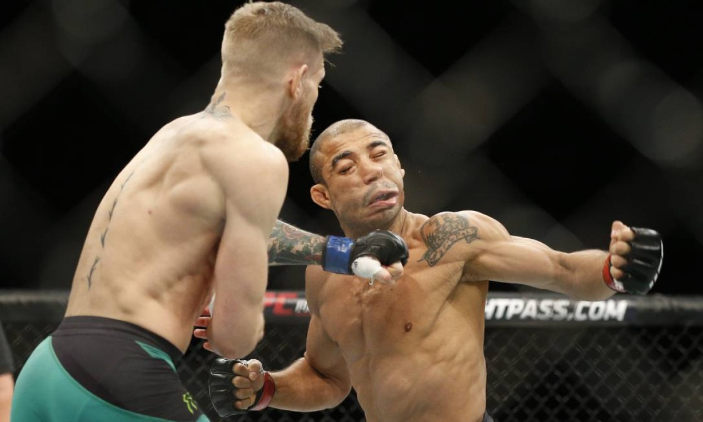

Boxe no UFC
O poder dos punhos dentro do octógono
O que é o Boxe?
O boxe é uma arte marcial milenar que utiliza socos como forma primária de ataque. Ele é focado em precisão, velocidade, potência, defesa, movimentação de pés e controle de distância.
Além de ser um esporte olímpico, o boxe é uma das bases mais fortes para lutadores de MMA.
Boxe no UFC
Dentro do UFC, o boxe é essencial para a trocação em pé. Lutadores com bom boxe conseguem controlar a distância, aplicar golpes limpos e abrir caminho para nocautes. Muitos campeões e estrelas do UFC são conhecidos por seu boxe técnico e poderoso.
Lutadores conhecidos pelo boxe afiado:
- Conor McGregor
- Max Holloway
- Amanda Nunes
- Junior "Cigano" dos Santos
- Nate Diaz
Golpes comuns do boxe usados no UFC
- Jab (soco direto com a mão da frente)
- Cruzado (Cross)
- Gancho (Hook)
- Uppercut (Soco ascendente)
- Esquiva e movimentação de pés
- Combinations (sequências de socos)
Finalizações marcantes no UFC
- Conor McGregor vs José Aldo (2015): Direto de esquerda em 13 segundos - um dos nocautes mais rápidos da história.
- Junior Cigano vs Cain Velasquez (2011): Overhand de direita certeiro no primeiro round.
- Amanda Nunes vs Cris Cyborg (2018): Sequência de cruzados e ganchos destruidores.
- Max Holloway vs Calvin Kattar (2021): Show de volume e precisão com boxe técnico.